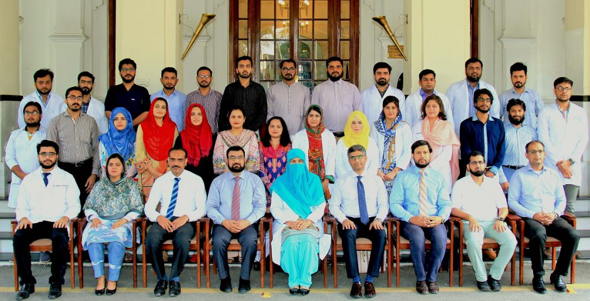

Department of Oral & Maxillofacial Surgery, Mayo Hospital is most established state of the art department in the Punjab since 1999. It has 50 bedded ward (Male & Female) and 4 bedded HDU facility for the Maxillofacial Surgery patients. The faculty of the department includes One Professor, One Associate Professor, Two Assistant Professors and Six Senior Registrars under their supervision department is rendering services to the patients and excellent teaching & training facility for Postgraduate Residents in the Maxillofacial Surgery. It provides elective surgical care to the patients of Oral Oncology, Facial Trauma, Orthogenetic Surgeries, Congenital anomalies corrective surgeries and 24/7/365 emergency services care for Maxillofacial Surgery patients
MBBS, FCCP (USA) MRCP (UK) FRCP (EDIN)
It is great honor for me as Chairperson of department of Oral Mazillofacial Surgery, MayoHospital to give an insight into department it is fully equipped department in terms of human resources and technical facilites for the patients of maxiofacial trauma, pathologies and defomities. Patients are manged in our department financially without any charges supported by funds supplied by Mayo hospital(health Department ,Punjab). We are providing 24 hours emergency service to the maxillofacial trauma patients. This department has eastablished itsel as managing highest number of oral Cancer patients with National and Internationsl acknowledgment.
Dr. Armughan Israr Mirza
Dr. Muhammad Ehsan ul Haq
Dr. Samira Shabbir Balouch
Dr. Shahzad Iqbal Malik
Associate Professor
Assistant Professor
Senior Registrar
Senior Registrar
MBBS, MCPS, FCPS(PUL), FCPS(CCM)
MBBS, DMRD,MD (Radiology)
MBBS, FCPS(Pulmo)
MBBS, FCPS(Pulmo)
Monday
WEDNESDAY
Friday
Prof. Dr. Nabeela Riaz
.....
Prof. Dr. Nabeela Riaz
Dr. Armughan Israr Mirza
Dr. Samira Shabbir Balouch
Dr. Muhammad Ehsan ul Haq